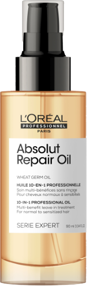

OLEJEK
Absolut
Repair
Do włosów zniszczonych,
wymagających regeneracji i nawilżenia
Serie Expert Absolut Repair od L'Oréal Professionnel oferuje holistyczne działanie, które przywraca włóknom włosów zdrowy i "pełny" wyglad. Cenne składniki gamy Absolut Repair Gold to przede wszystkim ekstrakty z otrębów, złotej komosy ryżowej oraz białka pszenicznego.
Proteiny i aminokwasy zawarte w komosie ryżowej mają działanie regenerujące i ochronne. Zapobiegają potencjalnym uszkodzeniom lub ich negatywnym skutkom. Komosa ryowa słynie z właściwości nawilających, które przeciwdziałają przesuszeniu się włosów.